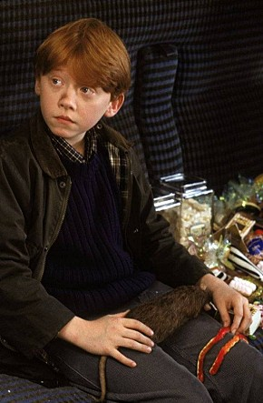

5형제 중 맏이. <해리 포터> 시리즈에서 위즐리 형제의 막내이자 해리 포터의 단짝인 론 위즐리 역으로 데뷔했지만, 타고난 연기력을 인정 받아 영국 비평가 협회에서 주는 최우수 신인상을 수상했다. 그 후 피터 호위츠 감독의 <썬더팬츠>에 사이먼 캘로우, 스티븐 프라이와 함께 출연한 바 있다. <해리 포터> 시리즈에 캐스팅되기 전까진 학교 학예회와 지방 연극클럽에서 무대에 서본 경력이 전부다. 당시 <피터팬 : PETER PAN> <애니 : ANNIE> 그림 형제의 동화 <럼플스틸스킨: RUMPLESTILSKIN> 등에 출연했었다. BBC의 어린이 뉴스쇼 프로에서 <해리포터> 오디션 공개모집 광고를 듣고 응모, 행운을 차지했다.
